Spatial Autocorrelation with GLS

Much of our data is spatial
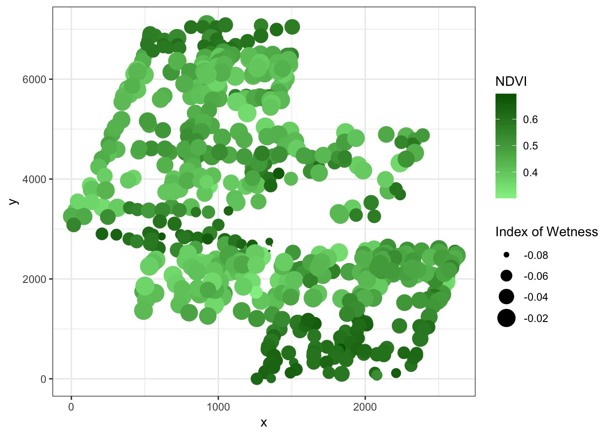
Much of our data is spatial
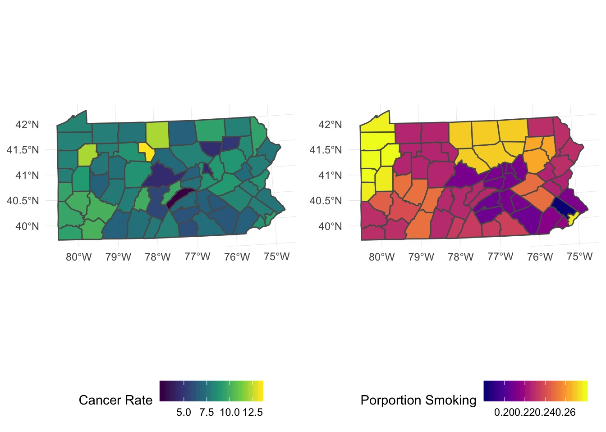
A note up front
- Spatial data analysis is… a big topic.
- Start by learning how to make maps (
sflibrary)
- Be prepared to dive in. Deep.
To Space and Beyond
How do we assess spatial autocorrelation?
What are the possible patterns of spatial autocorrelation?
How do we assess point spatial data?
How do we assess polygon spatial data?
How correlated is NDVI across space?
Spatial Autocorrelation and Moran’s I
\[I = \frac{N}{W}\frac{\sum\sum w_{ij}(x_i - \bar{x})(x_j - \bar(x))}{\sum(x_i - \bar{x})^2}\]
- W is a weight matrix (1/pairwise distance) with diagonals of 0
- I = 1, perfect positive correlation, I = -1, perfect anti-correlation
- \(E_i = \frac{-1}{N-1}\) and can be tested
Calculating Moran’s I
Make a distance matrix
Convert it to a weight matrix
Run
spdep::moran.test
Making a Weight Matrix
Yes, this is a PITA…
#first, mke a distance matrix of points
boreal_dists <- boreal %>%
dplyr::select(x,y) %>%
dist() %>%
as.matrix()
#inverse of distance is weight
boreal_dists_weights <- 1/boreal_dists
diag(boreal_dists_weights) <- 0
#turn into a weights list
boreal_w <- mat2listw(boreal_dists_weights)- NB, use projections with true distances (e.g., UTM, not latlong)
Moran’s I
Moran I test under randomisation
data: boreal$NDVI
weights: boreal_w
Moran I statistic standard deviate = 45.157, p-value < 2.2e-16
alternative hypothesis: greater
sample estimates:
Moran I statistic Expectation Variance
1.834024e-01 -1.879699e-03 1.683501e-05 What does this look like?
library(ncf)
boreal_cor <- spline.correlog(x=boreal$x, y=boreal$y,
z=boreal$NDVI, resamp=100, quiet=TRUE)
plot(boreal_cor)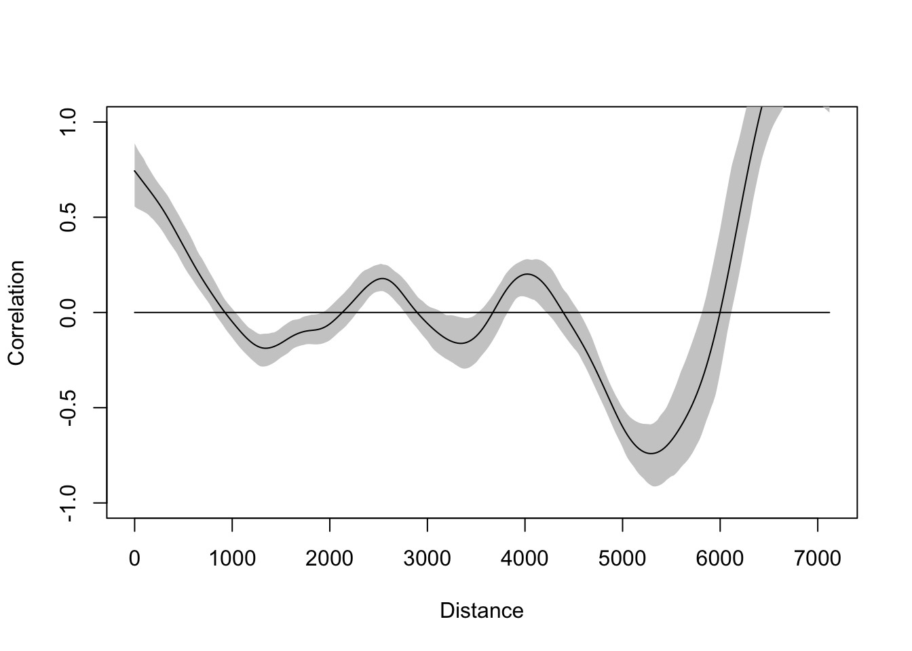
To Space and Beyond
How do we assess spatial autocorrelation?
What are the possible patterns of spatial autocorrelation?
How do we assess point spatial data?
How do we assess polygon spatial data?
SAR versus CAR
SAR:
Simultaneous Autoregressive Process \(y_i = BX_i + \sum Sy_ij + \epsilon_{i}\)
CAR:
Conditional Autoregressive Process \(y_i | y_{-i} ~\sim \mathcalc{N}{ BX_i + \sum S_{ij}yj, m_{ij}\)
SAR versus CAR
from https://stats.stackexchange.com/a/9983
Non-spatial model
My House Value is a function of my home Gardening Investment.
SAR model
My House Value is a function of the House Values of my neighbours.
CAR model
My House Value is a function of the Gardening Investment of my neighbours.
Variograms
- (Semi)variograms allow us to look at variance of squared difference between points at different distances
- Computationally intensive
- Shape tells us what the correlation structure should be
- With a fit covariance function, can estimate the whole surface
Our Variogram
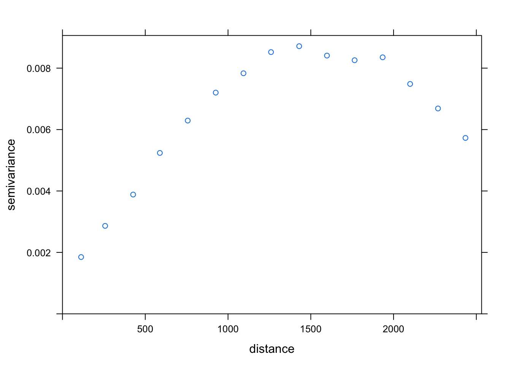
Anatomy of a Variogram

Spatial Correlation Matrix
\[ cor(\epsilon) = \begin{pmatrix}
1 & \rho_{ij} &\rho_{ik} & ... \\
\rho_{ji} & 1& \rho_jk & ...\\
\rho_{ki} & \rho_{kj} & 1 & ... \\
. & . & . & ... \\
. & . & . & ... \\
. & . & . & ... \\
\end{pmatrix}\]
\[\rho{ij} = f(x_i, x_j)\] e.g., \[\rho{ij} = exp(-Distance/range)\]
Different Shapes of Autocorrelation

How do you tell the difference?
- Biology
- Fit all structures and evaluate
- Visual examination of variogram shape
What model best describes our variogram?
model psill range
1 Nug 0.0009415914 0.000
2 Sph 0.0072401874 1412.745See the Fit Variogram
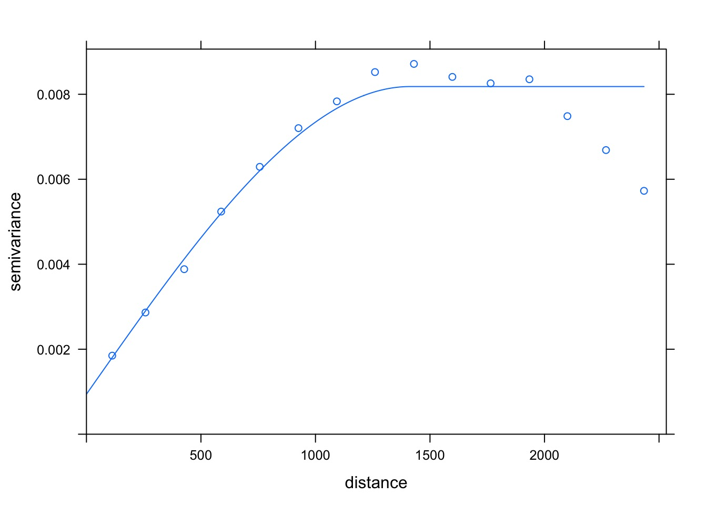
What are the Implications of our Variogram: Krigging
- Determine a model of the data (variogram!)
- Build a grid covering the space you are interested in
- Use your model to predict points between those you have measured
What are the Implications of our Variogram: Krigging
#1. Make a gstat object (model)
boreal_gstat <- gstat(formula = NDVI ~ 1, loc= ~x+y,
data = boreal, model = best_vario)
#2. Create a grid of "Pixels" using x as columns and y as rows
TheGrid <- expand.grid(x=seq(1,3000, 100),y=seq(1,7000, 100))
coordinates(TheGrid)<- ~ x+y
#coordinates(boreal)<- ~ x+y
gridded(TheGrid) <- TRUE
#3. Make a predicted surface
TheSurface <- predict(boreal_gstat, model=best_vario, newdata=TheGrid)
#plot
image(TheSurface, col=terrain.colors(20),
xlim = c(1,3e3), ylim = c(1, 7e3))What are the Implications of our Variogram: Krigging
[using ordinary kriging]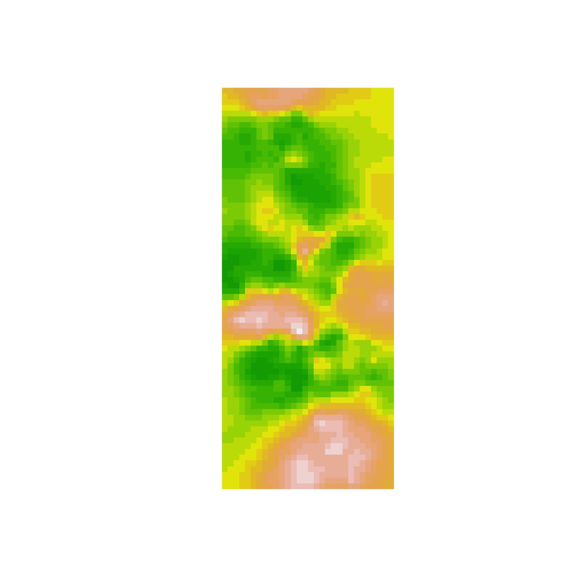
This is all very cool, but…
None of this involves biological processes
Model of Where Space Enters In
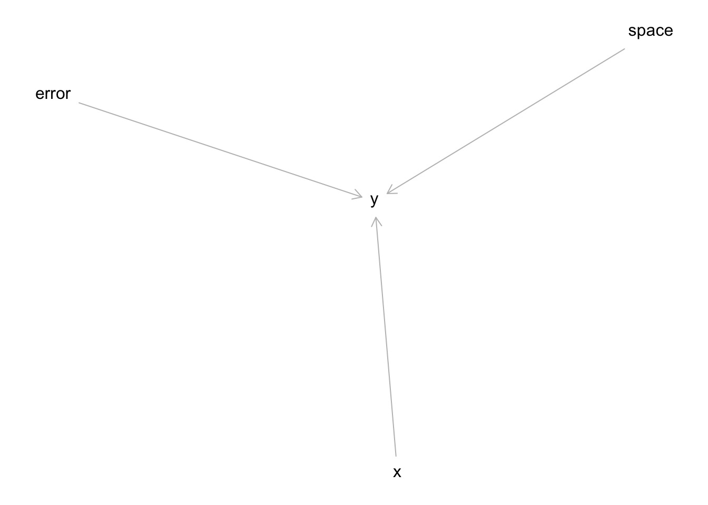
How do we translate this to correlation?
And…
Once we build a process-based understanding, we can krig even better!
To Space and Beyond
How do we assess spatial autocorrelation?
What are the possible patterns of spatial autocorrelation?
How do we assess point spatial data?
How do we assess polygon spatial data?
To Space and Beyond
How do we assess spatial autocorrelation?
What are the possible patterns of spatial autocorrelation?
How do we assess point spatial data?
How do we assess polygon spatial data?
Analysis of Point Pattern Data
Naieve Analysis of Point Pattern Data
Plot of Residuals
ggplot(boreal %>% mutate(resid = residuals(boreal_mod)),
aes(x = x, y = y, color = resid)) +
geom_point() +
scale_color_viridis_c(option = "B")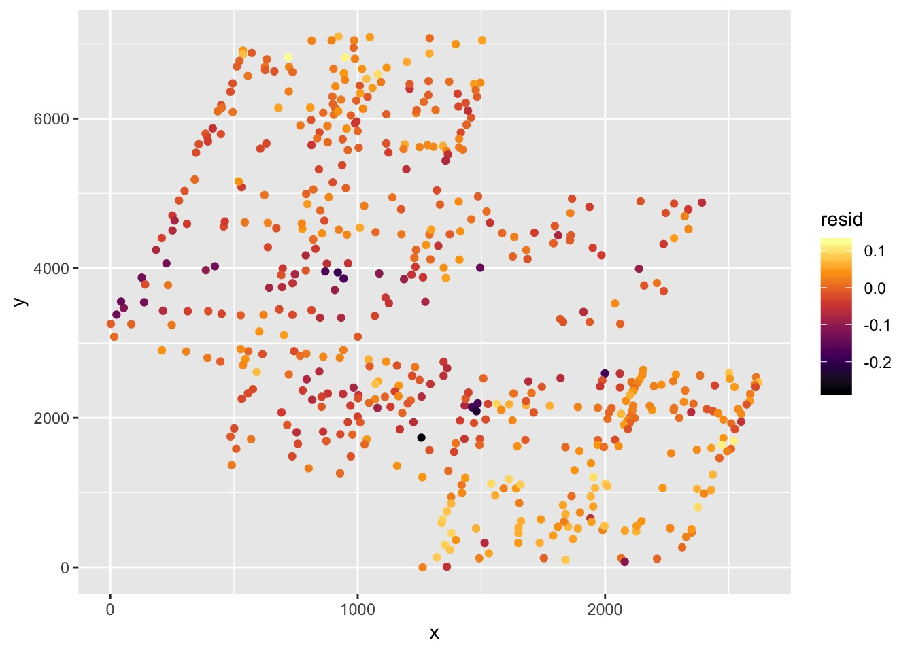
Analysis of Residuals
Moran I test under randomisation
data: residuals(boreal_mod)
weights: boreal_w
Moran I statistic standard deviate = 30.255, p-value < 2.2e-16
alternative hypothesis: greater
sample estimates:
Moran I statistic Expectation Variance
1.217804e-01 -1.879699e-03 1.670611e-05 What’s the Variogram of Residuals?
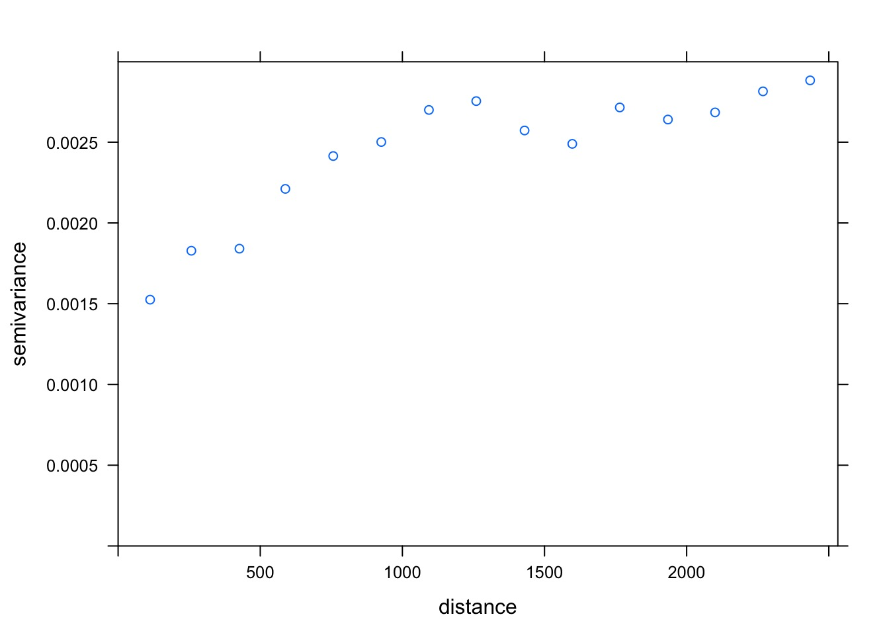
What model best describes our residuals?
best_resid_vario <- fit.variogram(v_bor_resid,
model = vgm(c("Exp", "Gau", "Mat", "Sph")))
best_vario model psill range
1 Nug 0.0009415914 0.000
2 Sph 0.0072401874 1412.745Compensating with CAR Model
Compensating with CAR Model: glmmTMB
Compensating with CAR Model: gls
Differences?
# A tibble: 2 x 5
term estimate std.error statistic p.value
<chr> <dbl> <dbl> <dbl> <dbl>
1 (Intercept) 0.327 0.00552 59.3 1.95e-236
2 Wet -4.88 0.154 -31.6 3.05e-124# A tibble: 2 x 5
term estimate std.error statistic p.value
<chr> <dbl> <dbl> <dbl> <dbl>
1 (Intercept) 0.402 9.19 0.0437 9.65e- 1
2 Wet -3.04 0.168 -18.1 1.62e-57Predictions Across Landscape
- Requires predictions of wetness across landscape
- So, variogram and krig away!
- Then make a new grid.
- Use wetness values and spatial values to simulate new landscape with
predictandbrmsorglmmTMBmodel
To Space and Beyond
How do we assess spatial autocorrelation?
What are the possible patterns of spatial autocorrelation?
How do we assess point spatial data?
How do we assess polygon spatial data?
Analysis of Polygons
We need distances - So let’s Make a Mesh
penn_mesh <- poly2nb(penn)
coords <- st_centroid(st_geometry(penn))
plot(penn_mesh, coords, col = "red")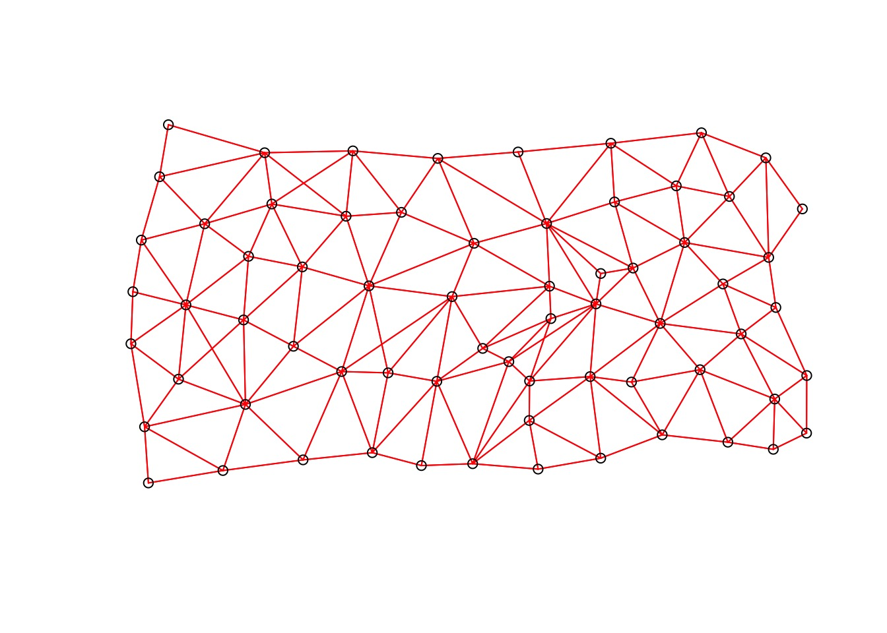
Analysis of Autocorrelation Says….
Moran I test under randomisation
data: residuals(penn_mod)
weights: penn_weights
Moran I statistic standard deviate = 0.60877, p-value = 0.2713
alternative hypothesis: greater
sample estimates:
Moran I statistic Expectation Variance
0.030083778 -0.015151515 0.005521394 Really?
penn_v <- variogram(residuals(penn_mod) ~ 1,
~x+y,
data = as.data.frame(penn) %>%
mutate(x = st_coordinates(coords)[,1],
y = st_coordinates(coords)[,2]))
plot(penn_v)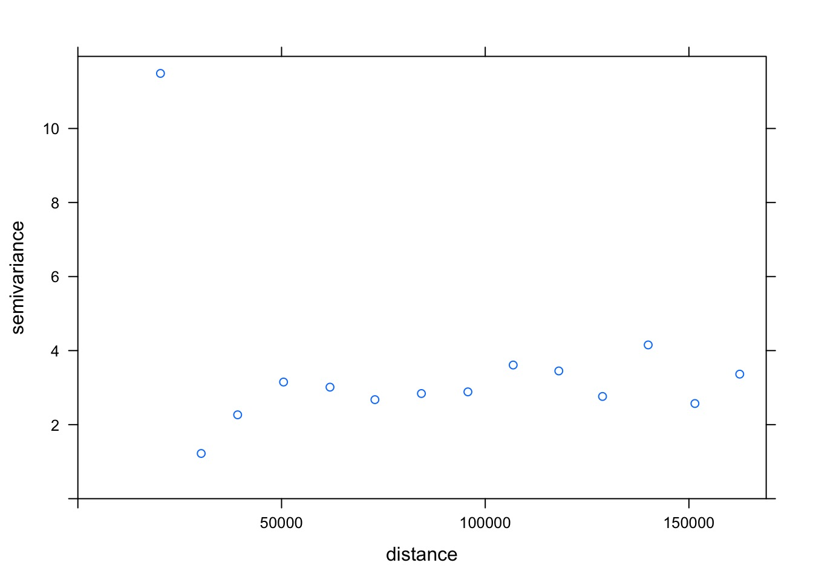
Fitting A SAR Model Anyway…
compare
Estimate Std. Error t value Pr(>|t|)
(Intercept) 3.621208 2.135931 1.695377 0.09478954
smoking 18.345216 8.944603 2.050982 0.04430385 Estimate Std. Error z value Pr(>|z|)
(Intercept) 3.715435 2.161831 1.718652 0.08567779
smoking 17.919386 9.048019 1.980476 0.04765004Predictions?
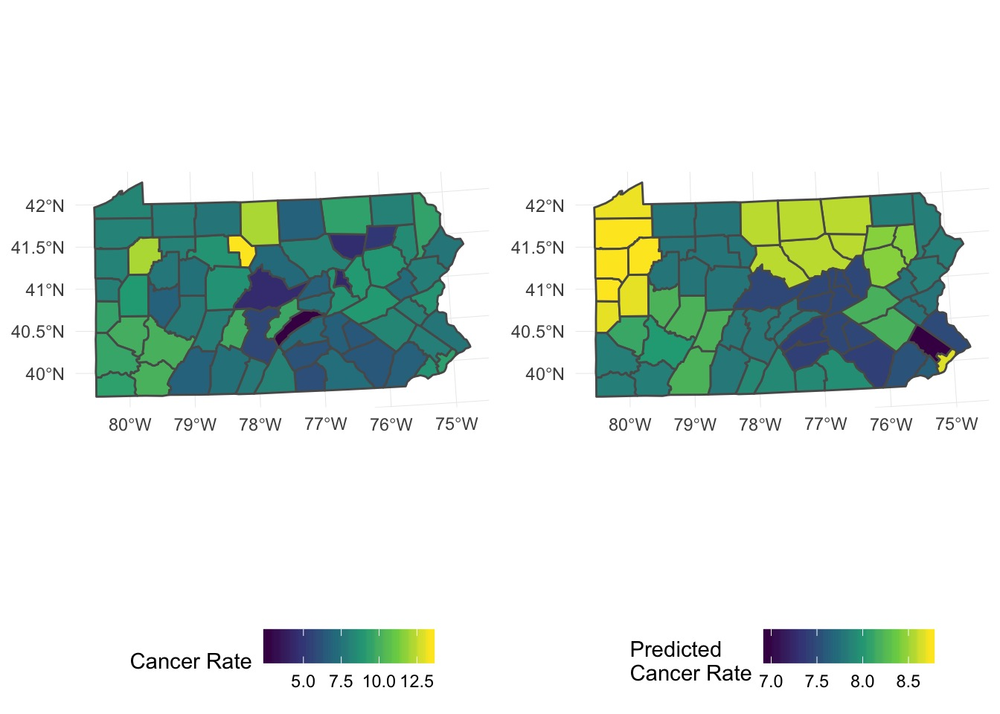
Example
- Irish forest data
- Goal is to model lake Ph
- Possible influences:
- Sodium Dominance Index (SDI)
- Status as forested or not
- Altitude
- Sodium Dominance Index (SDI)
- Spatial autocorrelation possible